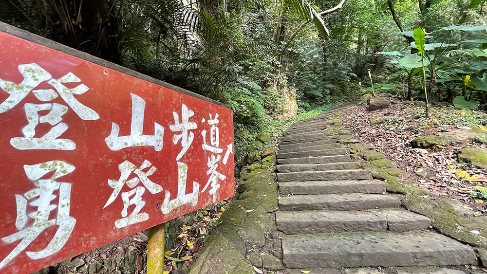
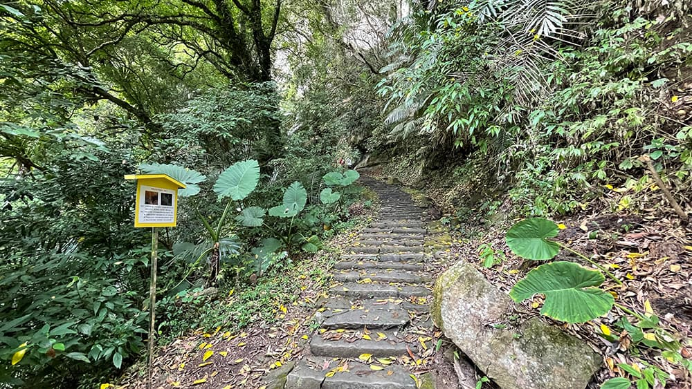
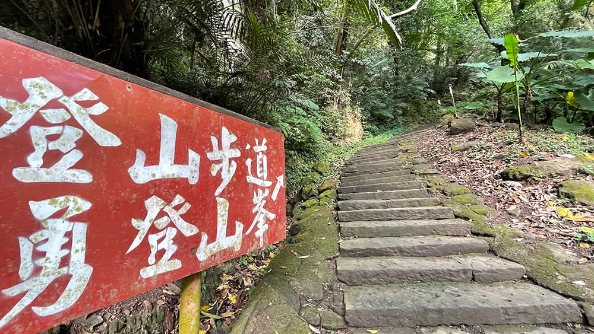
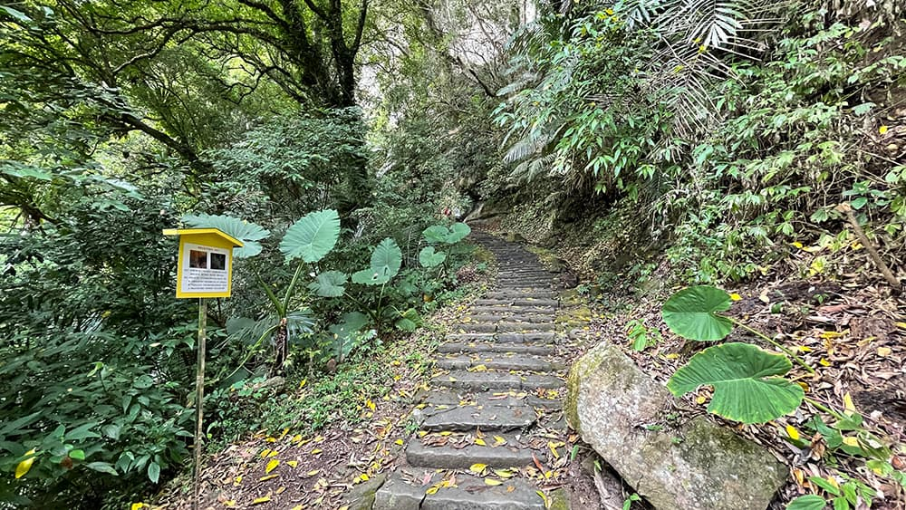

約 8K
勸化堂停車場獅山古道望月亭獅頭山三角點原路折返勸化堂停車場
根據民俗學家表示，許多寺廟之所以蓋在地勢高的地方，是為了「看得更遠」。因此，從事登山活動時，無論我們有沒有信仰，總幾乎與寺廟有著密不可分的緣份。而這次要爬的獅頭山，更是各路神佛匯聚的佛門聖地，究竟是什麼因緣際會，促成獅頭山不單單只是爬山人耳眼相傳的小百岳其一，而且還是全台灣與「佛光山」齊名的佛教名山呢？藉由這趟獅山古道行腳之旅，感受歷史與山林交織共奏的梵唄。
獅頭山是獅（頭）山風景區的中心，發展範圍四通八達，共涉及或涵蓋新竹峨眉鄉、北埔鄉、竹東鎮等區域，以及苗栗縣三灣鄉與南庄鄉，古道路線繁多。我此次登山路線由苗栗三灣鄉的勸化堂停車場起登，計畫沿著獅山古道一直往上行，取獅頭山三角點後再循原路下山返回。
獅（頭）山風景區同時也是參山國家風景區之一，「參山」指的是位於台中的梨山、彰化南投的八卦山，以及苗竹的獅頭山這三座山。三處不僅各自分散不接壤，所屬風景區皆是獨立的省級風景特定區，後來因配合觀光局規劃的「完善優質的旅遊服務網」計畫，於２００１年合併成同一個國家級風景區。

轉經輪，又稱轉經筒，有小、中、大之分，在佛界中有各自不同的稱呼，差異主要在於其筒內經咒數量的多寡。據說轉經輪的發明是造福一般不識字的信徒，用手「順時針」推動轉經輪一圈，就代表已將其裡面存放的經咒念完一遍，視為一種利己利人的修持方法。
自清光緒年間，桃園商人邱普捷晚年選中此山設寺禮佛為始，陸續吸引其他和尚、修士毗鄰建庵，至今大小佛寺宮廟已有十八座。而紫陽門與門後的輔天宮，則是勸化堂停車場登山口起登遇到的第一座廟宇。
輔天宮建於西元１９１５年，主要供奉地藏王菩薩。
穿過廟前廣場，循指標繼續往上走，即來到與輔天宮比鄰而居的勸化堂。
勸化堂與元光寺同為獅頭山的開山祖廟，其中勸化堂規模是獅頭山諸廟之最，廟產也是最豐富，供奉的神祉更是橫跨釋道儒三教，教化眾生意味濃厚。
從勸化堂往輔天宮方向俯瞰。
離開勸化堂，穿過道德門，隨即會遇到一處岔路。往左直行通往舍利洞與開善寺，這裡我選擇取右道，往更高處走去。
 



從這裡開始的登山步道景色就比較有山林的感覺了，階梯步道沿途時不時設置一些立牌，大多是弘揚佛法一類。
步道推到底碰一石壁，這處石壁可不是普通的石壁，其名「獅山大石壁」。獅山大石壁可說是獅山古道的地標，不僅氣勢驚人，岩壁上頭銘刻的佛語更是吸引許多信徒慕名前來朝聖。此外，輔天宮、勸化堂等寺廟皆以此做為屏障，立於山腰一方。
繼續走，來道獅山古道的制高點──望月亭，這裡除了有幾間商家提供簡單的飲食之外，最大的吸睛點莫過於一旁的縣界界碑了。
這塊「斑駁綠苔深」的界石立於民國四十八年，各有一面分別刻著「新竹縣界」與「苗栗縣界」的字樣。
需要注意的是，獅頭山三角點需從商店旁的小路進入，若循著石板道路一直往前走會直接走到元光寺去，如果要取三角點的到望月亭需多加留意路線。
往三角點的山徑屬於原始的土徑，長度不長且坡度平坦，體感大約五十至一百公尺左右，彈指須臾之間就能抵達。
獅頭山，小百岳編號２９，海拔高度４９２公尺。因山形描述似一頭蹲踞的獅子，故而得名。關於獅頭山的歷史最早可追溯到清光緒年間，當時有一名喚邱普捷的商賈，於獅頭山山頂某處洞穴採樟腦時赫然發現許多白骨，於心不忍的他商請地主收屍超渡，爾後進一步加修成佛寺，成為獅頭山的開山始祖。隨著日新月異，依山而建的寺廟亦越來越多，而當初那座名叫「獅岩洞」佛寺，如今已易名為「元光寺」。
從元光寺出去的獅山古道今日已整修成車輛可以通行的道路，往東北方向前進可以陸續朝聖海惠庵、覺然塔、金剛寺等多座寺廟直達獅尾山。「前山」獅頭山與「後山」獅尾山相連的古道即為完整的「獅山古道」，不過此行我早上先去關刀山，下午才開始走獅頭山，時間不足情況下故沒有走完全程，在踩點完元光寺後便原道而返。

循原路散步下山，仔細想想忽然想到，獅頭山的三角點是不是就是立在獅山大岩壁上方呢？
回程來到開善寺與勸化堂的分岔路，開善寺這段沒走過，看ＧＰＸ軌跡也不長，於是便順道過去看看。開善寺與勸化堂、輔天宮合稱「三大聖剎」，祭祀觀世音菩薩、孔子、關公等神明的勸化堂代表天堂；奉祀地藏王菩薩、閻羅王的輔天宮則為地府；而開善寺代表的則是西方淨土，主要奉祀西方三聖，也就是阿彌陀佛、觀世音菩薩，及大勢至菩薩。
在寫遊記之前，其實我對佛教的認識並沒有這麼豐富，極大多數的知識都是藉由照片行腳記錄當中一一搜尋網路文獻資料拼湊而成。儘管個人並無信仰任何宗教，但卻蠻有興趣去認識各宗教的文化與歷史，若不是因為登山，可能也不大有什麼機會會來到像獅頭山這樣寺院林立的地方吧！